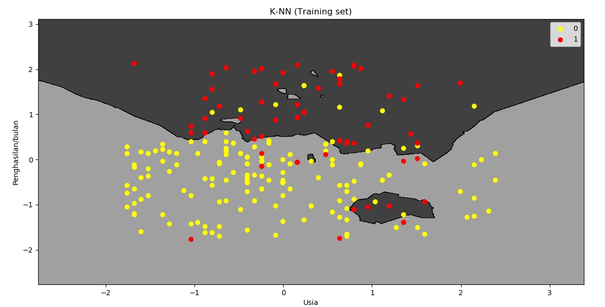

K-Nearest Neighbors
Apa itu k-NN?
K-Nearest Neighbors (k-NN). Jika diartikan ke dalam bahasa Indonesia, artinya adalah tetangga terdekat sebanyak K buah. K-Nearest Neighbor (K-NN) adalah suatu metode yang menggunakan algoritma supervised dimana hasil dari sampel uji yang baru diklasifikasikan berdasarkan mayoritas dari kategori pada K-NN. Tujuan dari algoritma ini adalah mengklasifikasi objek baru berdasakan atribut dan sampel latih. pengklasifikasian tidak menggunakan model apapun untuk dicocokkan dan hanya berdasarkan pada memori. Diberikan titik uji, akan ditemukan sejumlah K objek (titik training) yang paling dekat dengan titik uji. Klasifikasi menggunakan voting terbanyak di antara klasifikasi dari K objek.
Algoritma K-NN menggunakan klasifikasi ketetanggaan sebagai nilai prediksi dari sample uji yang baru. Dekat atau jauhnya tetangga biasanya dihitung berdasarkan jarak Eucledian. Algoritma metode KNN sangatlah sederhana, bekerja dengan berdasarkan pada jarak terpendek dari sample uji ke sample latih untuk menentukan KNN nya. Setelah mengumpulkan KNN, kemudian diambil mayoritas dari KNN untuk dijadikan prediksi dari sample uji.
Langkah - langkah k-NN
-
Tentukan jumlah kelompok neighbors (K) nya. Umumnya adalah 5.
-
Ambil data K terdekat (K neighbors) dari data terbaru (umumnya 5 buah K) berdasarkan jarak euclidean antar keduanya.
-
Dari K-neighbors ini, hitung berapa banyak data poin yang masuk di masing-masing kategori.
-
Masukkan data baru ini ke dalam kelompok yang memiliki jumlah K-neighbors terbanyak
Kelebihan dan Kekurangan k-NN
Kelebihan k-NN :
- memiliki beberapa kelebihan yaitu bahwa dia tangguh terhadap training data yang noisy dan efektif apabila data latih nya besar.
Kelemahan dari k-NN
-
k-NN perlu menentukan nilai dari parameter K (jumlah dari tetangga terdekat)
-
Pembelajaran berdasarkan jarak tidak jelas mengenai jenis jarak apa yang harus digunakan dan atribut mana yang harus digunakan untuk mendapatkan hasil yang terbaik
-
Biaya komputasi cukup tinggi karena diperlukan perhitungan jarak dari tiap sample uji pada keseluruhan sample latih.
Studi Kasus
Seorang pemilik toko hp ingin mecari tahu solusi iklan di internet, di mana ia memiliki data pelanggannya. Melalui data penghasilan dan usia. Pemilik hp tersebut ingin mengiklankan produknya di kelompok yang memiliki kemungkinan untuk membeli hp nya lebih tinggi. Sehingga nantinya klasifikasi ini bisa digunakan oleh pemilik toko hp untuk semakin memperkuat hubungan mereka terhadap konsumen. Misal untuk penguatan marketing, strategi penawaran yang tepat, tipe hp apa saja yang cocok bagi mereka, dll.
Kebutuhan
Sebelum memulai project sebaiknya lakukan hal - hal berikut, jika sudah silahkan bisa langsung menuju ke script program di bawah.
-
install bahasa pemrograman python, bisa anda download di sini
-
Dataset csv, bisa anda download datasetnya di sini.
-
Install numpy menggunakan
pip:
pip install numpy
- Install matplotlib menggunakan
pip:
pip install matplotlib
- Install pandas menggunakan
pip:
pip install pandas
Script Program
# Mengimpor library
import numpy as np
import matplotlib.pyplot as plt
import pandas as pd
# Mengimpor dataset
dataset = pd.read_csv('Data_Customers_HP.csv')
X = dataset.iloc[:, [2, 3]].values
y = dataset.iloc[:, 4].values
# Membagi dataset menjadi Training set and Test set
from sklearn.model_selection import train_test_split
X_train, X_test, y_train, y_test = train_test_split(X, y, test_size = 0.25, random_state = 0)
# Feature Scaling
from sklearn.preprocessing import StandardScaler
sc = StandardScaler()
X_train = sc.fit_transform(X_train)
X_test = sc.transform(X_test)
# Membuat model k-NN
from sklearn.neighbors import KNeighborsClassifier
classifier = KNeighborsClassifier(n_neighbors = 5, metric = 'minkowski', p = 2)
classifier.fit(X_train, y_train)
# Memprediksi Test set
y_pred = classifier.predict(X_test)
# Membuat Confusion Matrix
from sklearn.metrics import confusion_matrix
cm = confusion_matrix(y_test, y_pred)
# Visualisasi hasil Training set
from matplotlib.colors import ListedColormap
X_set, y_set = X_train, y_train
X1, X2 = np.meshgrid(np.arange(start = X_set[:, 0].min() - 1, stop = X_set[:, 0].max() + 1, step = 0.01),
np.arange(start = X_set[:, 1].min() - 1, stop = X_set[:, 1].max() + 1, step = 0.01))
plt.contourf(X1, X2, classifier.predict(np.array([X1.ravel(), X2.ravel()]).T).reshape(X1.shape),
alpha = 0.75, cmap = ListedColormap(('grey', 'black')))
plt.xlim(X1.min(), X1.max())
plt.ylim(X2.min(), X2.max())
for i, j in enumerate(np.unique(y_set)):
plt.scatter(X_set[y_set == j, 0], X_set[y_set == j, 1],
c = ListedColormap(('yellow', 'red'))(i), label = j)
plt.title('K-NN (Training set)')
plt.xlabel('Usia')
plt.ylabel('Penghasilan/bulan')
plt.legend()
plt.show()
Penjelasan Script
-
Line 1-4 mengimpor library yang diperlukan.
-
Line 7 mengimpor dataset.
-
Line 8 mendefinisikan variabel X yaitu kolom usia dan penghasilan/bulan.
-
Line 9 mendefinisikan variabel y yaitu keputusan beli/tidak.
-
Line 12 mengimpor library dari sklearn untuk membagi dataset ke dalam training dan test set dengan konfigurasi 75:25 dan random number generator 0.
-
Line 13 mendefinisikan variabel training dan test set.
-
Line 16-19 melakukan feature scaling.
-
Line 22 mengimpor library k-NN.
-
Line 23 adalah mendefinisikan variabel classifier sebagai model k-NN.
-
T kita memilih jumlah K 5 sesuai default nya. Kemudian metric kit pilih ‘minkowski’, dan p kita isi 2, karena menggunakan euclidean distance
-
Line 24 mengaplikasikan model ini terhadap X_train dan y_train, karena kita ingin melatih modelnya dari training set.
-
Line 27 adalah mendefinisikan variabel y_pred untuk memprediksi test set. Kita memprediksinya dari X_test, yang nantinya y_pred ini akan dibandingkan dengan y_test. Jika y_pred hasilnya mendekati y_test, maka bisa disimpulkan performanya cukup baik.
-
Line 30 mengimpor library confusion_matrix dari sklearn untuk membuat confusion_matrix (CM)-nya. CM adalah perbandingan antara benar dan salah antara y_pred dengan y_test.
-
Line 31 membuat variabel cm sebagai confusion matrix nya.
-
Line 34-49 adalah perintah untuk visualisasi model k-NN terhadap training set. Hasilnya akan tampak sebagai berikut:

Tampilan model k-NN dari training set. Gambar ini adalah hasil prediksi keputusan beli/tidak berdasarkan usia dan penghasilan/bulan yang dimiliki customers.
Pada gambar di atas dapat kita lihat bahwa zona abu-abu adalah kelompok di mana pelanggan memutuskan untuk tidak membeli, sementara zona hitam adalah kelompok pelanggan memutuskan untuk membeli.
Titik-titik kuning adalah data-data pelanggan yang memutuskan untuk tidak membeli, sedangkan titik-titik merah adalah data-data pelanggan yang memutuskan untuk membeli.